译自 Heterojunction Bipolar Transistors for Circuit Design: Microwave Modeling
and Parameter Extraction, First Edition. Jianjun Gao.
© 2015 Higher Education Press. All rights reserved. Published 2015 by John Wiley & Sons Singapore Pte Ltd.
本译文仅用于学术研究目的，版权归原作者及出版方所有。
在更为传统的 BJT（也称为同质结 BJT）中，载流子从发射极注入基区的效率主要由发射区与基区的掺杂浓度之比决定，这意味着必须使发射区掺杂浓度高于基区掺杂浓度才能获得较高的发射极注入效率。然而，基区较低的掺杂浓度会导致接触基极电极的电阻较高，而发射区较高的掺杂浓度又会导致基极—发射极电容较大。这是限制 BJT 工作频率的两个关键问题。
为了获得更高的发射极注入效率，一个很好的选择是采用带隙比基区更宽的材料来制作发射区。宽禁带发射极双极晶体管的潜在优势最早由 Williams Shockley 于 1948 年提出，这类晶体管的基本原理由 Kroemer [1, 2] 进一步发展。改变器件带隙的技术，使得人们可以对电子与空穴所受的作用力分别进行设计。通过改变带隙与电场的组合，可以分别调控作用在电子与空穴上的力，从而改善器件特性。
尽管异质结的概念自 20 世纪 50 年代就已存在，但制造工艺一直是 HBT 器件发展中的制约因素。20 世纪 70 年代以来，出现了两种现代外延技术：分子束外延（MBE）与金属有机化学气相沉积（MOCVD）。首只成功制备在 GaAs/AlGaAs 材料体系上的商用 HBT，展示了其在高速与高频应用中的显著优势。
由于发射区采用宽禁带材料，载流子从基区反向注入发射区的现象被降至最低，并且发射极注入效率的提高不再直接依赖于发射区与基区的相对掺杂浓度。因此，HBT 既保留了硅器件前辈的优点，又将其扩展到更高的工作频率。此外，硅双极晶体管的诸多缺点也得以克服。
当使用两种不同的半导体材料形成结时，该结称为半导体异质结。显然，HBT 器件的核心是异质结；因此，在阐述 HBT 器件的基本原理之前，简要介绍异质结对理解 HBT 器件的工作十分有益。本章的其余部分将讨论用于高速应用的物理结构与基于 HBT 的集成电路，并说明如何将异质结构引入双极晶体管以改善其性能。
如前所述，当使用两种相同的半导体材料形成结时，该结称为半导体同质结。与同质结相对，异质结构定义为化学组分随位置变化的半导体结构。最简单的异质结构由单个异质结构成；异质结是半导体晶体内部化学组分发生变化的一个界面。由于异质结构中两种组成半导体属于不同类型，它们的许多性质存在明显差异。影响异质结构行为最重要的性质是材料的晶格常数与禁带宽度。
理想的异质结应具备以下性质：
一般而言，导带边与价带边在异质界面处都是不连续的。界面处导带边与价带边的能量差分别称为导带不连续量与价带不连续量。在由窄禁带材料与宽禁带材料形成异质结时，能带能量的对准方式对决定结的特性十分重要。本节将讨论两个最常用的例子：nP 结与 Np 结（如 GaAs/AlGaAs 材料体系），其中大写字母表示禁带宽度较大的材料。
所谓能带对准，是指两种半导体各自的导带边与价带边在两种材料界面处相对排列的方式。图 4.1a 给出了由窄禁带材料与宽禁带材料构成的 nP 异质结在接触前的能带图 [3]。值得注意的是，一种材料的导带与价带位于另一种材料的导带与价带之间，这类异质结也称为 I 型异质结。
两个导带能量之差记为 ΔEC，可表示为
两个价带能量之差记为 ΔEV，可表示为
其中 q 为电子电荷，χn 与 χP 分别为 n 型区与 P 型区的电子亲和势。导带边与价带边不连续量之和等于禁带宽度之差，ΔEg = EgP − Egn。
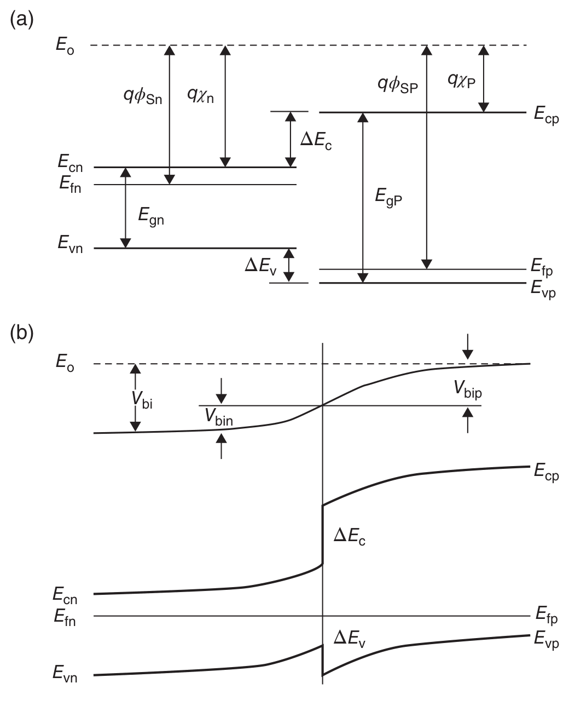
图 4.1b 给出了两种材料接触后处于热平衡时 nP 异质结的能带图。由于两种材料的禁带宽度不同，它们的导带与价带不可能在异质界面上同时连续。因此，导带与价带两者之中至少有一个在界面处必然是不连续的。注意到两种材料中的费米能级趋于一致（Efn = EfP），此处以真空能级 Eo 作为参考。
与同质结的情形相同，电子与空穴的流动形成了空间电荷区。总的内建电势垒记为 Vbi，可表示为
其中 Vbin 与 VbiP 分别为 n 区与 P 区中的内建电势垒：
空间电荷区向 n 型区一侧延伸的宽度记为 xn，可表示为
空间电荷区向 P 型区一侧延伸的宽度记为 xP，可表示为
其中 εn 与 Ndn 分别为 n 侧的介电常数与掺杂浓度；类似地，εP 与 NaP 分别为 P 侧的介电常数与掺杂浓度。
Np 异质结在两种材料接触前后的能带图如图 4.2 所示。由图 4.1 与图 4.2 可以看出，能带图表明异质结中电子与空穴所面临的势垒高度可能存在显著差异。同质结与异质结的一个直接区别在于电子与空穴所看到的势垒高度不同。在 nP 异质结中，电子的势垒高度大于空穴的势垒高度，因此可以预期由电子形成的电流与空穴电流相比是微不足道的。与 nP 异质结相反，在 Np 异质结中空穴的势垒高度大于电子的势垒高度；因此，由电子形成的电流相比空穴电流更为显著。
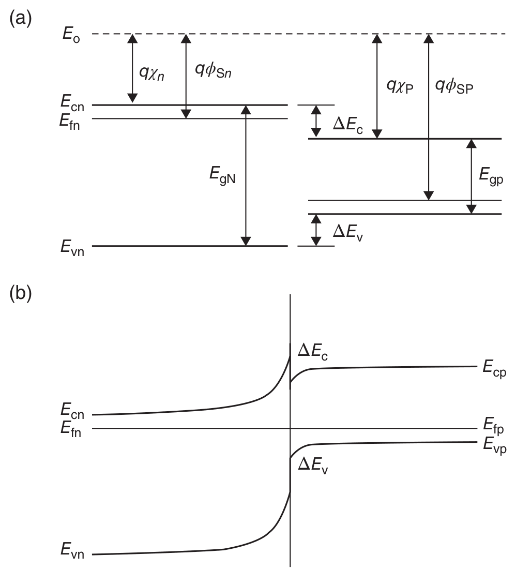
异质结通常由能够以低缺陷密度相互外延生长的材料构成。因此，有实用价值的异质结体系由晶格匹配相对良好的材料组成。为减少晶格缺陷的形成，两种材料的晶格常数匹配应优于 0.1%。自然界并不能提供晶格常数匹配到如此精度的半导体。然而，可以通过人工方法形成三元与四元化合物来制备——即用其他元素替代天然存在的二元半导体（如 GaAs）中的一部分晶格位置。用于制备异质结最常用的材料组如下：
图 4.3 给出了可用于制备异质结的镓（Ga）、铝（Al）、砷（As）与磷（P）可能合金的范围 [4–7]。纵轴为合金分子的晶格间距，横轴为合金的禁带能量。阴影区域的边界由三元半导体合金（即三元素合金）构成。例如，标有 InAs 与 GaAs 的两个角点之间的连线，即为 x 取值从 0 到 1 的合金 InxGa1−xAs。内部区域表示四元合金 InxGa1−xAsyP1−y。GaAs/AlGaAs 体系在从 GaAs 到 AlAs 的整个组分范围内仅具有很小的晶格失配，因此是最早被开发并应用于器件结构的异质结体系之一。
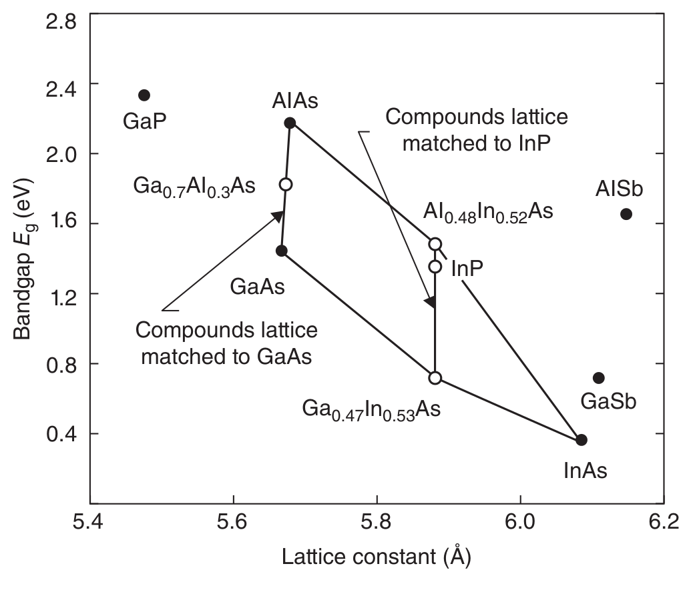
表 4.1 总结了三种常用 HBT 材料异质结构——GaAs/Al0.3Ga0.7As、In0.5Ga0.5P/GaAs 与 InP/In0.53Ga0.47As——的能带不连续量。ΔEV/ΔEC 比值越大，表明空穴的势垒高度大于电子的势垒高度，且电子电流大于空穴电流。因此，较大的 ΔEC 是理想的，因为对于 HBT 而言，它能限制空穴从基区向发射区的反向注入。
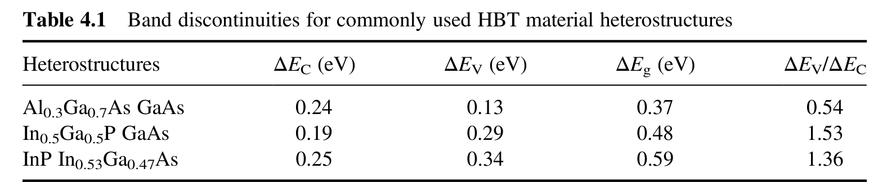
在 4 GHz 以下，微波硅 BJT 曾为众多电子设计提供可靠且低成本的解决方案。它们常用于小信号放大器、线性功率放大器（PA）、低噪声放大器（LNA）与振荡器。然而，这些 BJT 通常以分立晶体管的形式使用，阻抗匹配是在印刷电路板（PCB）上以外部方式完成的，部分原因在于射频匹配网络对物理尺寸的要求相对较大。HBT 是 BJT 的一种变体，具有更高的载流子注入效率，可以视为 Si BJT 向微波频段的延伸。在 HBT 中，通过在发射极—基极结处引入异质结来消除载流子从基区向发射区的反向注入，从而确保高电流增益。由于异质结提供了更高的发射极注入效率，发射区与基区的掺杂浓度几乎可以独立于电流增益的要求进行选择。发射极—基极结中的禁带宽度差减小了空间电荷区内的少数载流子复合，从而带来更高的共发射极电流增益。由于发射极—基极结存在能带不连续，HBT 中的发射区掺杂可以降低以减小基极—发射极电容，同时基区掺杂可以设定在较高水平以减小基极接触电阻与薄层电阻，而电流增益不会有明显劣化。减小的电阻—电容（RC）渡越时间与 HBT 中更高的电子饱和速度共同使得晶体管的总延迟更短。因此，HBT 能够实现比同质结 BJT 更高的工作速度。相对于传统的硅器件，HBT 具有以下几方面优势：
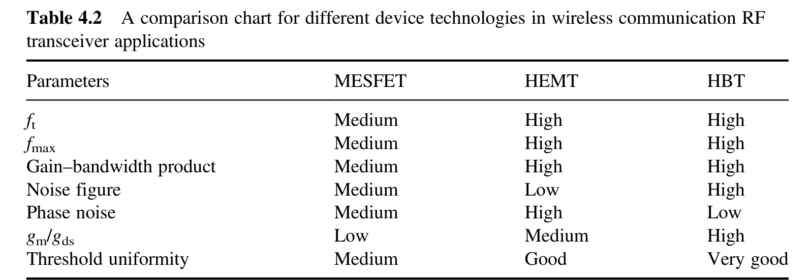
表 4.2 给出了 MESFET、HEMT 与 HBT 的定性性能比较 [8]；由此可以看出，HBT 器件具有更好的阈值电压均匀性、更高的跨导与输出电导之比（gm/gds）以及更低的相位噪声。由于 HBT 中的散粒噪声源较强，其噪声系数高于 FET 器件。MESFET 与 HEMT 是载流子沿横向传导的多数载流子器件，而 HBT 则是允许电子电流与空穴电流传导的纵向器件。由于输出电流与输入电压呈指数关系，HBT 的跨导高于 FET。
砷化镓（GaAs）作为最常用的 III–V 族化合物，具有更高的体电子迁移率、可行的更高电流密度以及更高的电子速度。GaAs/AlGaAs HBT 器件是先进材料的首批受益者。图 4.4 给出了 GaAs 与 Si 中电子的稳态速度—电场特性；GaAs 的最高稳态速度约为 Si 的 7 倍 [5]，因此 GaAs 的截止频率高于 Si。HBT 结合了 Si BJT 与 GaAs FET 的优势，适用于微波应用（如图 4.5 所示）。由于 GaAs 的表面态不再对发射极电流贡献显著噪声，HBT 的 1/f 噪声远低于 GaAs FET。此外，作为一种性能同时取决于电子与空穴特性的少数载流子器件，HBT 还可以制成互补形式。
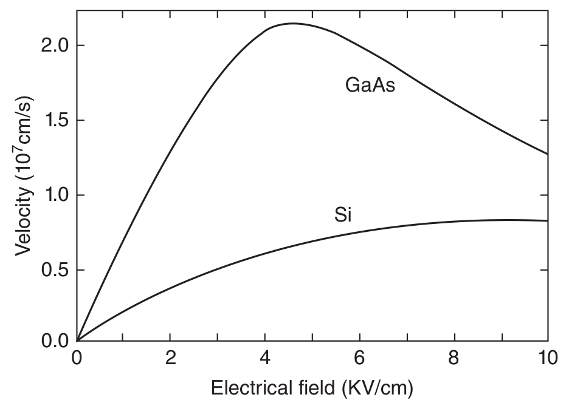
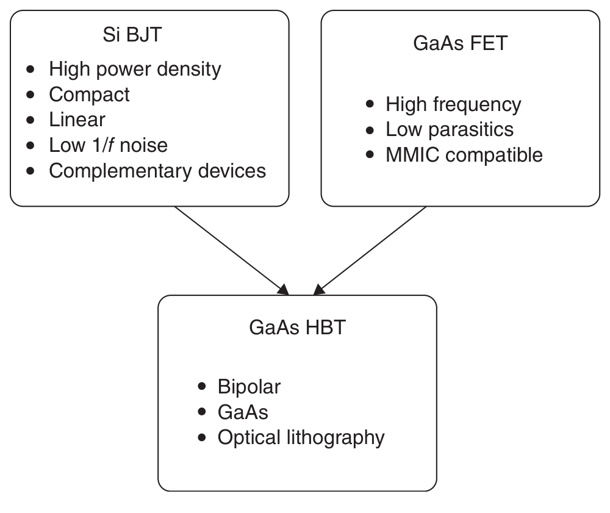
在所有用于 HBT 的 GaAs 基材料中，研究得最为深入的组合是 GaAs/AlGaAs 体系，它具有很高的电流增益。图 4.6 给出了 GaAs/AlGaAs HBT 在零偏置模式与有源模式下的能带图。AlGaAs 发射区的禁带宽度比 GaAs 基区层更宽。突变的发射极—基极结存在势垒尖峰与凹槽，可以通过在 AlGaAs 发射区两侧进行线性组分缓变来加以平滑，从而降低电子需要克服的势垒。显然，HBT 是一种单异质结器件：发射区材料为 AlGaAs，而基区与集电区材料为 GaAs。因此，基极—发射极结是异质结，而基极—集电极结是同质结。如果假设 pn 结两端没有外加电压，则结处于热平衡状态——费米能级在整个系统中保持恒定（Efn = Efp = EfN）。此时导带与价带能量必须发生弯曲（如图 4.6a 所示）。当基极—发射极结正向偏置时，基极—发射极结的势垒高度降低（如图 4.6b 所示）。基极—发射极结中空穴的势垒高度大于电子的势垒高度，因此电子电流相比空穴电流更大。
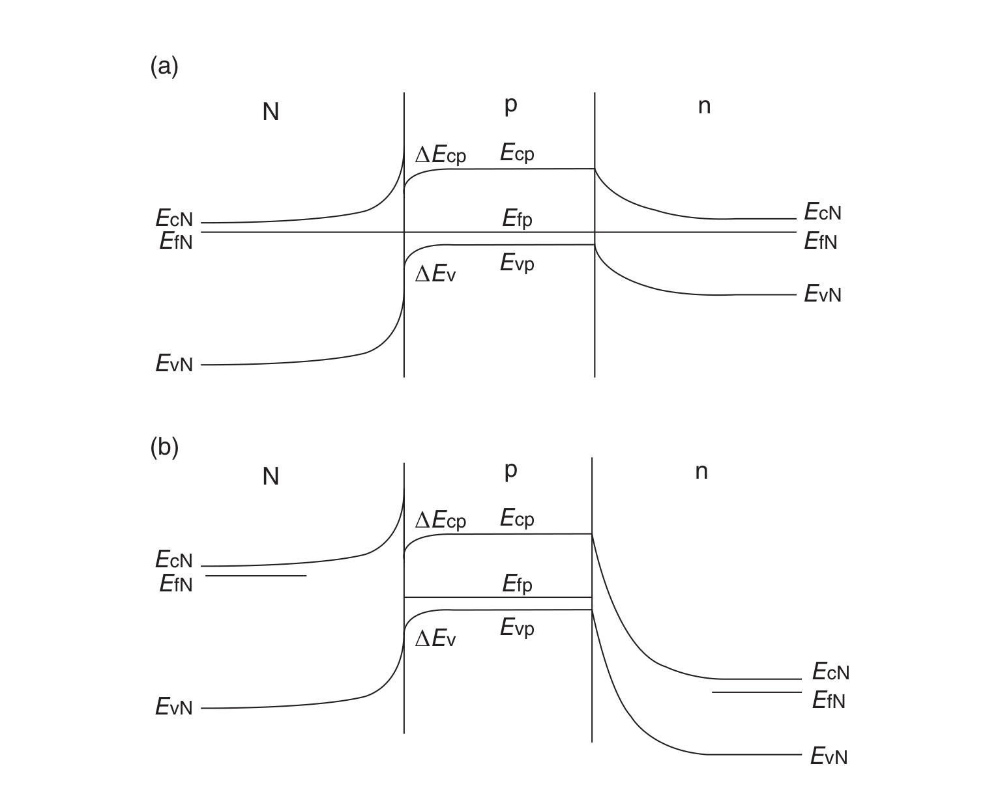
图 4.7 给出了 Si BJT 与 GaAs/AlGaAs HBT 中沿电子运动方向的掺杂浓度随位置的变化 [4]。对于 GaAs HBT，基区掺杂的灵活性可高达 1020 cm−3，比 Si 同质结晶体管的掺杂高出 102 倍。基区薄层电阻可低至 100 Ω/□，因此基极电阻减小，fmax 提高。
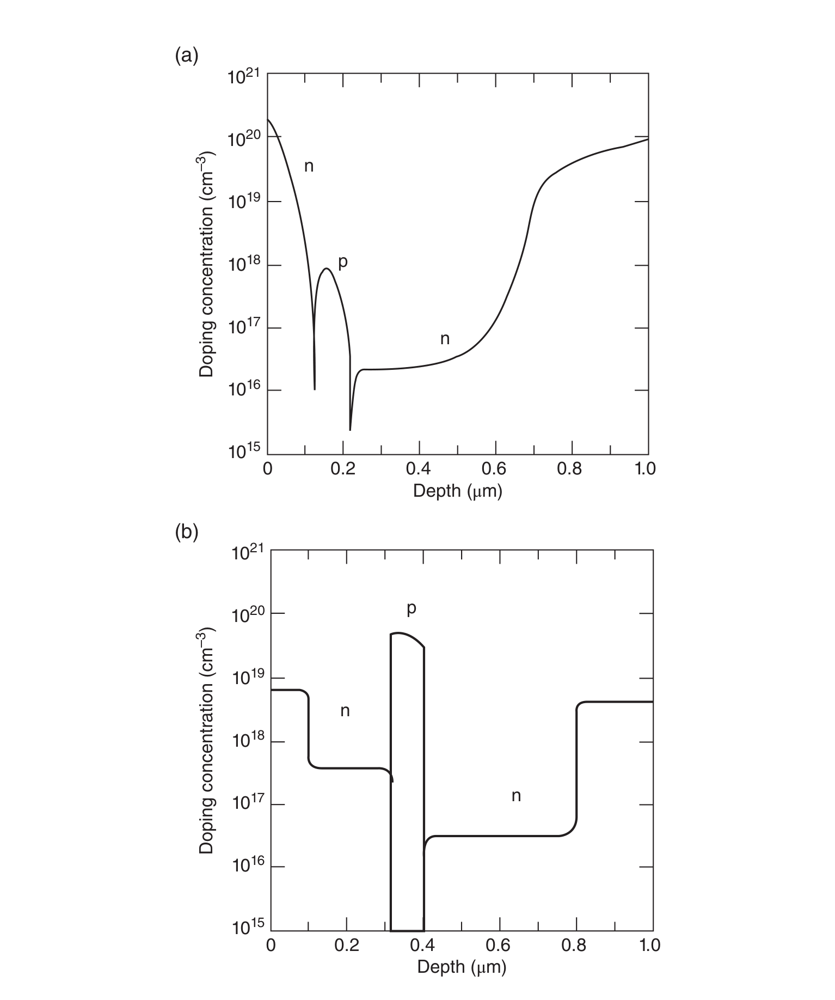
发射极注入效率因子是 HBT 的重要品质因数，其解析表达式可近似写为
其中 Dn 与 Dp 分别为电子与空穴的扩散系数，ne 与 pb 分别为发射区与基区掺杂浓度，We 与 Wb 分别为发射区与基区宽度。
由式 (4.8) 可以看出，即使基区掺杂很高，仍然可以获得很高的注入效率。与 Si BJT 相比，在室温（T = 300 K）下发射极注入效率可提高约 105 倍。根据目标应用的不同，HBT 的集电区厚度可以针对更高的频率响应或更高的击穿电压进行调整。更薄的集电区设计缩短了载流子穿过集电区的输运时间，从而获得更高的速度；而更厚的集电区设计则以牺牲器件速度为代价来提高击穿电压。
在同质结中，为了获得可接受的发射极注入效率，需要对发射区进行重掺杂，而对基区进行相对轻掺杂。如果基区掺杂过低，则存在这样的风险：在高反向电压下，基区会被完全耗尽（穿通）。与 BJT 不同，HBT 器件的基区穿通电压可以非常高，且基区宽度调制通常可以忽略不计。由于输出电导更低（或厄利电压更高），可以获得更高的电压增益。图 4.8 给出了 GaAs HBT 与 BJT 直流特性的比较 [6]，展示了其非常高的厄利电压与更大的集电极—发射极饱和电压。图 4.9 给出了 BJT 与 GaAs HBT 的一组典型 Gummel 曲线（log IC 与 log IB 对 VBE），展示了在低集电极电流下共发射极电流增益 β 的滚降，以及在高集电极电流下不存在 β 滚降的现象。在正常偏置条件下（有源模式），HBT 的基极—发射极工作电压 VBE 要高得多。
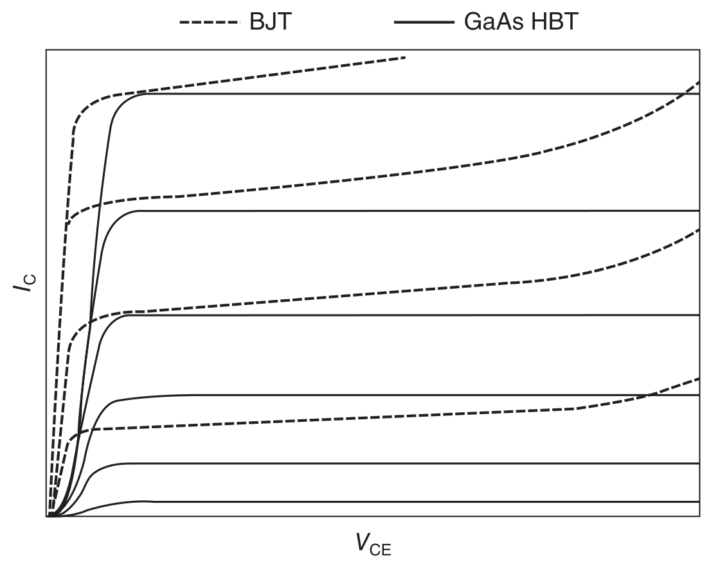
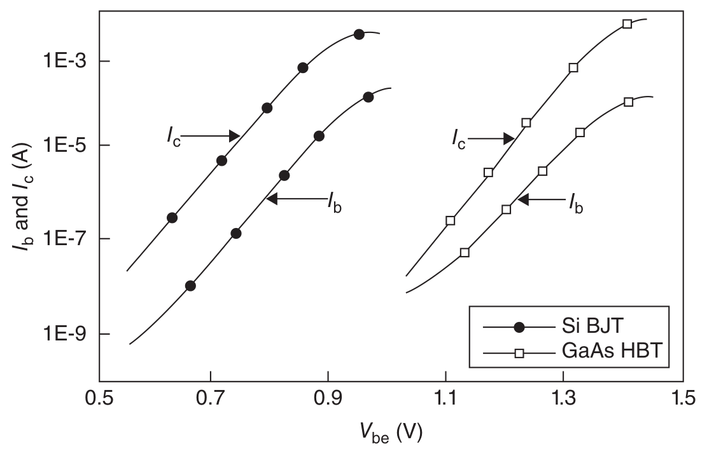
图 4.10 比较了截止频率 fT 与共发射极电流 IC 的关系；值得注意的是，与 Si BJT 相反，HBT 器件在高集电极电流下并不表现出任何由大电流注入（"Kirk 效应"）引起的 fT 滚降。
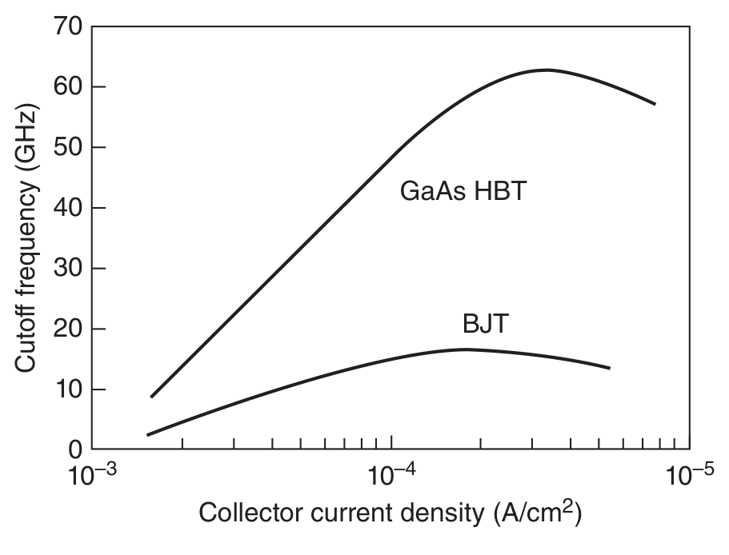
GaAs 基 HBT 技术在过去数年中发展极为迅速。例如，亚微米 InGaP/GaAs HBT 已展现出 fT 超过 150 GHz、fmax 超过 200 GHz 的先进性能。基于 GaAs HBT 的 LNA 与 PA 已成为高速电路设计的主要研究课题之一。不同的射频/微波电路需要不同的晶体管参数。例如，PA 使用具有更高功率密度的晶体管，而 LNA 采用具有低噪声特性的晶体管。下面我们将介绍基于 GaAs HBT 的 LNA 与 PA 的典型拓扑结构。
图 4.11 给出了基于 GaAs HBT 的 LNA 的典型拓扑。除共发射极组态外，多重反馈、达林顿与共源共栅拓扑也是高速电路设计中常用的拓扑。达林顿晶体管包含两个以射极跟随器组态连接的晶体管，同时共用同一个集电极接触。达林顿组态的主要优点在于，电路的总电流增益等于两个器件电流增益的乘积。图 4.11b 给出了达林顿反馈放大器的组态。这种直接耦合放大器拓扑由两级增益级构成：第一级是共发射极放大器；第二级是由达林顿连接的晶体管 Q2 与 Q3 组成的反馈放大器。第一级作为低噪声共发射极放大级，决定了整个两级放大器的噪声系数；第二级达林顿反馈放大器则提供宽带增益与输出驱动能力。共源共栅是一种两级放大器，由跨导放大器后接电流缓冲器构成（如图 4.11c 所示）。与单级放大器相比，这种组合可能具有以下一项或多项优点：更高的输入—输出隔离度、更高的输入阻抗、更高的输出阻抗、更高的增益或更高的带宽。就晶体管而言，增益器件可以工作在共发射极或共集电极模式，并配以第二个工作在共基极模式的晶体管，其发射极连接到增益晶体管的集电极。共源共栅改善了输入—输出隔离度，因为从输出到输入没有直接耦合，这消除了密勒效应，从而有助于获得更高的带宽。
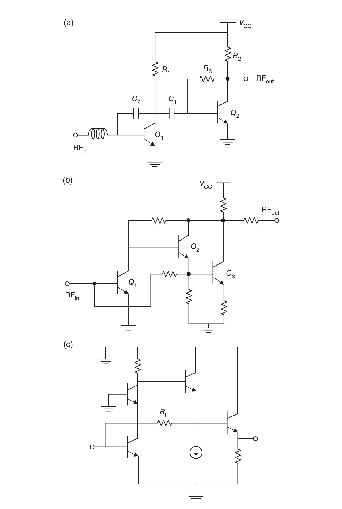
表 4.3 总结了 GaAs HBT 型 LNA 的性能；显然，在 DC ~ 20 GHz 频率范围内噪声系数约为 3 dB，在频率高达 60 GHz 时约为 6 dB。由于其出色的器件线性度以及在当前无线通信频段下更高的功率增益，GaAs HBT 目前在手机 PA 市场占据主导地位。我们采用 GaAs HBT 制作 PA，是因为它们具有单位芯片面积上高功率处理能力以及在低电源电压下的高效率工作特性。图 4.12 给出了基于 GaAs HBT 的 PA 的典型拓扑，它由输入、级间与输出三个匹配网络组成。表 4.4 总结了基于 GaAs HBT 的 PA 的性能。
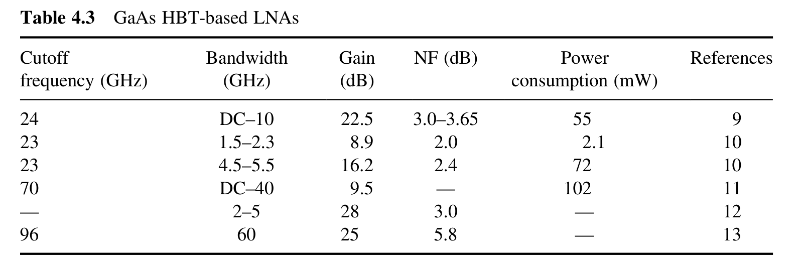
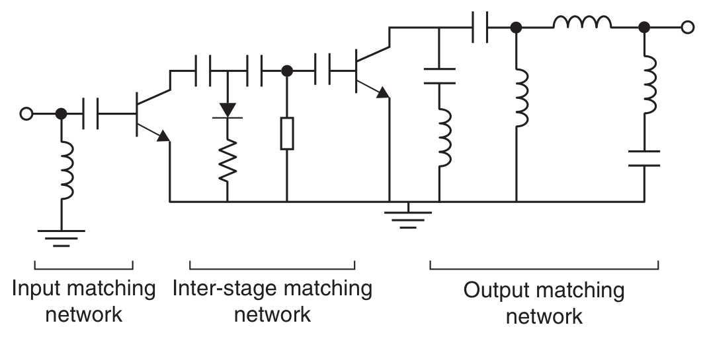
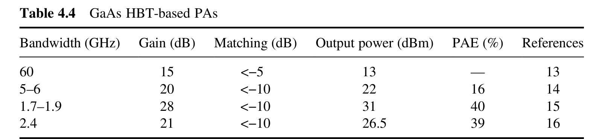
InP 材料体系有着与 GaAs 同样悠久的发展历史，数十年来被广泛应用于基于半导体的光电子学领域。采用 InP 将在一定程度上缓解我们在 GaAs 中所遇到的热问题。InGaAs 或 GaAsSb 等三元化合物半导体这类晶格匹配材料，提升了 InP 基晶体管的射频性能。众多研究小组的研究人员已经证明，在包括 FET 与 HBT 器件在内的所有半导体器件中，InP 基器件能够实现速度最快的晶体管。由于其优异的本征电学特性，InP 一直被寻求作为 GaAs 基材料体系的技术替代方案。该材料体系的主要问题是缺乏大尺寸晶圆衬底。
InP 基双极晶体管相比 GaAs/AlGaAs HBT 具有以下优势：
图 4.13 给出了 InP 与 InGaAs 相对于 GaAs 的速度—电场特性。在 npn InP HBT 中，较低的电子有效质量带来高迁移率，从而使基区渡越时间更短，伴随的扩散电容也更低。此外，InGaAs 与 InP 材料中更大的导带谷间能量间隔带来更高的电子峰值速度，可使集电极延迟时间短于同类的 GaAs 器件。InP 基 HBT 的 1/f 噪声也显著低于 GaAs 同类器件，因而适用于低相位噪声振荡器电路。除优异的电学特性外，与工作在 1.3 与 1.55 μm 的长波长光子器件的兼容性，为 InP HBT 技术增添了另一个维度。已有大量研究证实了 InP HBT 在微波与高速数字应用中的优势。
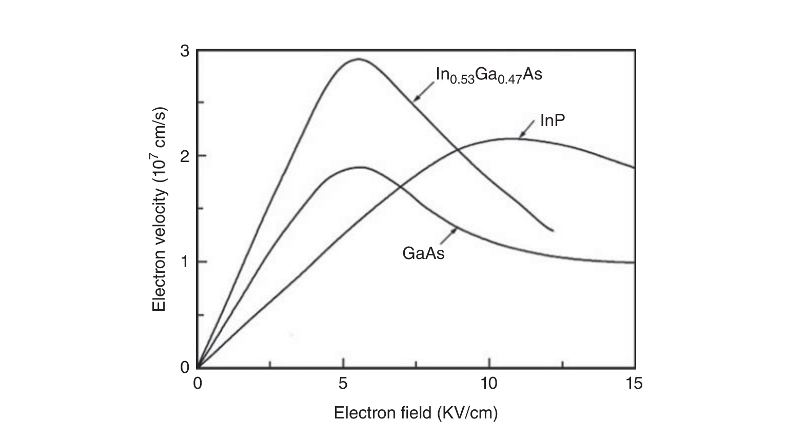
当一个 HBT 的基极—集电极结与基极—发射极结均为异质结时，该 HBT 称为双异质结 HBT（DHBT）；反之，如果 HBT 器件只包含一个异质结（即基极—发射极结为异质结，而基极—集电极结为同质结），则该 HBT 称为单异质结 HBT（SHBT）。有源模式条件下单异质结与双异质结 InP/InGaAs HBT 的典型能带图如图 4.14 所示 [17]。单异质结 Npn HBT 的基本结构由 n− 集电区、薄的 p+ 基区层以及采用更宽禁带材料的 N− 发射区组成。在正常偏置工作下，电子越过静电势垒从发射区注入 p+ 基区；注入的电子通过漂移与扩散过程输运穿过薄的基区，并被存在高电场的反偏基极—集电极结所收集。伴随着电子从发射区注入基区，同时也存在空穴从基区注入发射区，这会降低集电极电流。图中 Jn 为从发射区注入基区的电子电流，Jp 为从基区注入发射区的空穴电流，Jrb 为中性基区中的复合电流。采用 InGaAs 作为集电区材料的 InP/InGaAs SHBT 的一个重要局限是其击穿电压有限。对于要求高线性度（如 A/D 转换器）与大击穿电压（PA）的模拟应用，DHBT 因具有较高的集电极—基极击穿电压而更具吸引力。在 DHBT 中，采用 InP 等宽禁带材料作为集电区。
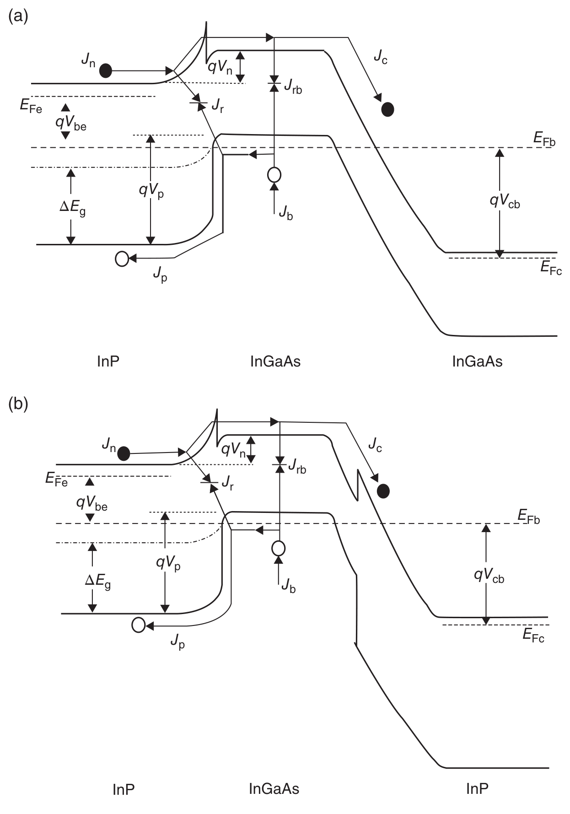
所制备 DHBT 结构的简化剖面图如图 4.15 所示。该器件层结构的特点是：InP 发射区、组分缓变的 InGaAs 基区、包含 InGaAs 间隔层与 InGaAsP 层的复合集电区、InP δ 掺杂区以及 InP 集电区。高掺杂的 InGaAs 用作发射区帽层与子集电区，以降低接触电阻率。InP 基 HBT 已成功用于实现复杂的数字 IC，例如全数据速率 40 Gb/s 的应用。三级限幅放大器的原理图如图 4.16 所示，其中采用了具有 400 mV 差分电压摆幅的差分发射极耦合逻辑（ECL）单元。为了改善高频性能，基本放大器单元采用跨导（TAS）与跨阻（TIS）组合，通过耦合共面传输线连接。采用有源 TIS 负载可提供比简单 ECL 缓冲器更高的增益带宽积 [18]，并能获得 30 GHz 以上的带宽。
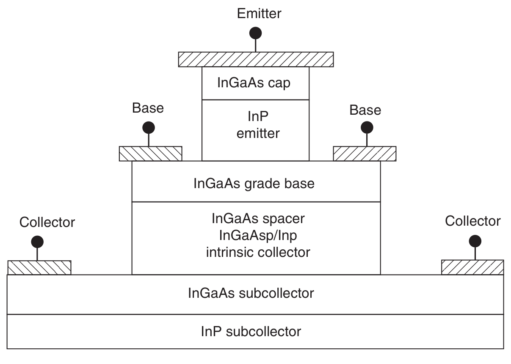
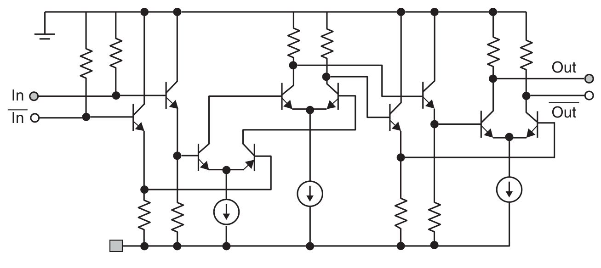
分布式放大器（DA）被公认为最流行且最成熟的宽带放大器组态之一。特别是，结构紧凑、成本低廉且高可靠性的微波分布式放大已展现出良好的宽带性能。其主要优点是在很宽的频带内具有均匀的增益、群时延与噪声系数，以及较低的电压驻波比（VSWR），因而可用于数字光通信及其他脉冲应用中的低噪声毫米波接收机。传统 DA 已展现出超宽的带宽，但它们存在增益偏低的缺点，并且需要偏置 T 型网络和/或隔直电容，从而增加了尺寸与成本。因此，将差分结构与 DA 相结合有潜力满足驱动器的全部要求。图 4.17 给出了 40 Gb/s 分布式调制器驱动器的框图；该调制器驱动器由集总参数差分预驱动器后接一个差分 DA 组成。之所以需要预驱动器，是因为差分 DA 自身无法提供足够的增益。整个电路为直流耦合，不需要偏置 T 型网络或隔直电容。预驱动器由若干差分放大级与缓冲级构成。为避免预驱动器输出与 DA 输入线终端之间的多重反射，输出电流开关带有负载电阻（RL），其阻值近似匹配分布式输出级输入人工线的镜像阻抗。表 4.5 给出了分布式调制器驱动器集成电路的比较；其传输速率至少可达到 40 Gb/s，最高可达 80 Gb/s，调制电压可达到 10 V 以上。
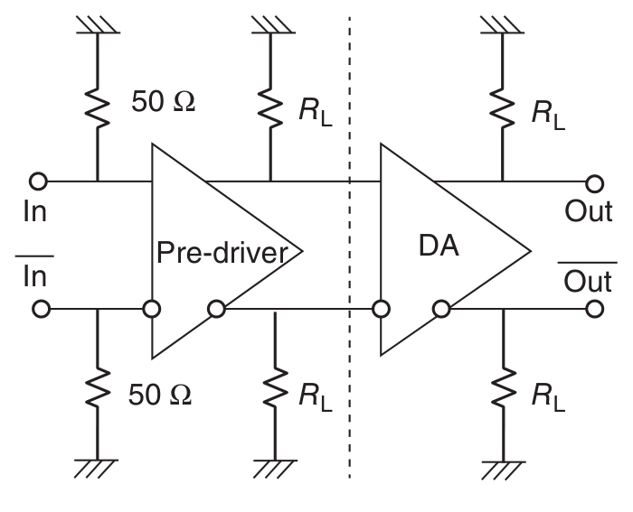
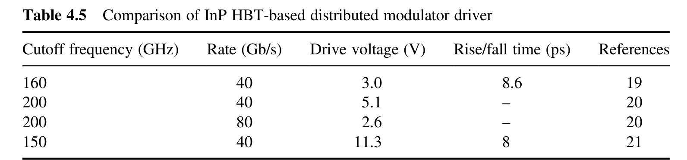
本章讨论了异质结与 HBT 器件（GaAs HBT 与 InP HBT）的物理结构与基本机制，简要介绍了面向高速应用的基于 HBT 的集成电路，并说明了如何将异质结构引入双极晶体管与场效应晶体管以改善其性能。